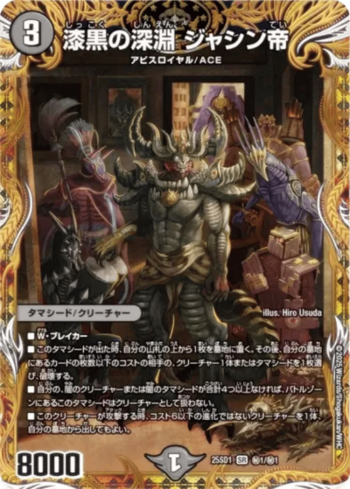
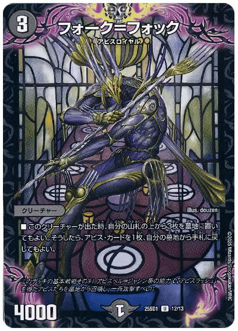
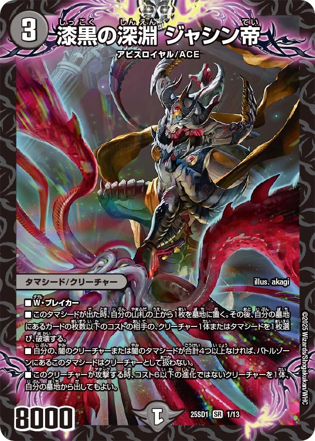
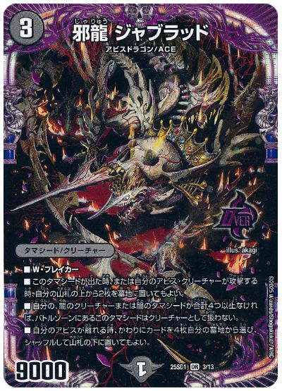
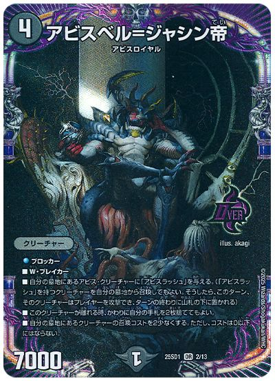

① 多くの墓地肥やし
墓地にカードをどんどん増やしていこう！
- 「フォーク＝フォック」をはじめとして、多くのカードが墓地を増やす能力を持っている
- たくさんカードを墓地に置いていこう！


技の王道は墓地を溜めながら、 カード同士の効果で相手を妨害・翻弄するデッキ。「効果を活かしたテクニカルな動きの体験」を味わえる。
墓地にカードをどんどん増やしていこう！

増えた墓地を活かして効果を発動しよう！

効果を使って盤面を強固にしよう！


パワー７０００のブロッカー
攻守共に強力な効果を持ったクリーチャー！
墓地から召喚できる効果と除去耐性を持つ。状況に応じて巧みに使い分けよう！